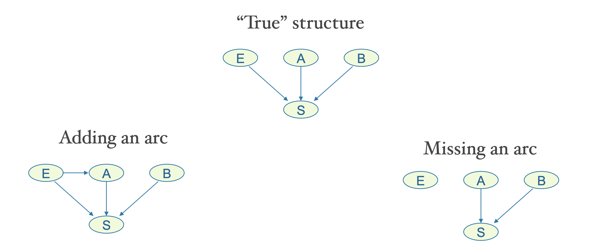
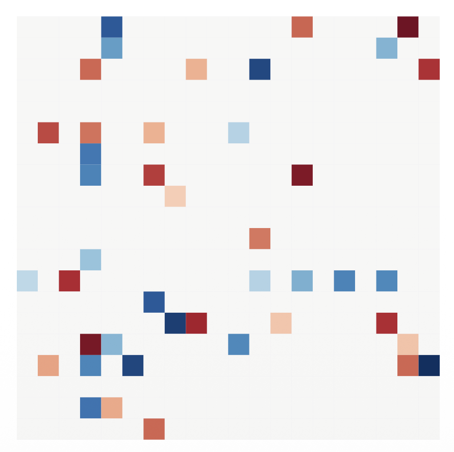

1. Introduction: From Constraints to Scores
이전 포스트들에서 다룬 Constraint-based Approach (PC 알고리즘 등)는 데이터의 조건부 독립성(Conditional Independence) 검정을 통해 그래프를 깎아나가는 방식이었습니다.
이 방법은 직관적이지만, 독립성 검정의 오류가 누적될 수 있고 데이터가 적을 때 불안정하다는 단점이 있습니다.
이번 포스트에서는 완전히 다른 접근 방식인 Score-based Approach를 다룹니다.
이 방법은 인과 구조 학습을 최적화 문제(Optimization Problem)로 바라봅니다.
- Goal: 데이터(\(D\))와 그래프 구조(\(\mathcal{G}\))가 얼마나 잘 맞는지를 평가하는 Score Function을 정의하고,
- Search: 이 점수를 최대화(혹은 최소화)하는 그래프 구조를 탐색합니다.
또한, 이산적인 그래프 탐색의 한계를 극복하기 위해 최근 제안된 연속 최적화 기반의 NOTEARS 알고리즘까지 다뤄보겠습니다.
2. Intuition: Data Fit vs. Simplicity
- Score-based Learning의 핵심 철학은 “데이터를 잘 설명하면서도(Data Fit), 구조적으로 간단한(Simplicity) 모델을 찾자”는 것입니다.
2.1 The Concept of Scoring
- 데이터셋 \(D\)가 주어졌을 때, 각 후보 그래프 \(\mathcal{G}\)에 대해 점수를 매깁니다.

- Missing Arcs: 실제 존재하는 인과관계를 놓치면 데이터의 패턴을 설명하지 못하므로 점수가 낮아져야 합니다.
- Extra Arcs: 불필요한 엣지를 추가하면 과적합(Overfitting)이 발생하므로 패널티를 받아야 합니다.
2.2 Likelihood as a Measure of Fit
가장 먼저 떠올릴 수 있는 점수는 우도(Likelihood)입니다. DAG 모델의 결합 확률 분포는 다음과 같이 분해(Factorization)됩니다.
\[P(\mathbf{V}) = \prod_{i=1}^{d} P(V_i \mid Pa_{\mathcal{G}}(V_i))\]
- 이에 대한 로그 우도(Log-Likelihood) 함수는 다음과 같습니다:
\[l(\theta; D) = \sum_{j=1}^{n} \sum_{i=1}^{d} \log P_{\theta_i}(v_i^{(j)} \mid pa_i^{(j)})\]
- 여기서 \(n\)은 샘플 수, \(d\)는 변수의 개수입니다.
- 이 식은 각 변수별로 독립적으로 계산하여 합산할 수 있다는 Decomposable 특성을 가집니다.
3. The Problem with Likelihood & BIC
- 하지만 단순히 우도만 사용하면 치명적인 문제가 발생합니다.
3.1 The Overfitting Problem
다음 두 그래프를 비교해 봅시다.
- True Graph (Left): \(A \rightarrow B \leftarrow C\) (V-structure). 여기서 \(A \perp\!\!\!\perp C\)입니다.
- Proposed Graph (Right): \(A \rightarrow B \leftarrow C\) 에 \(A \rightarrow C\) 엣지가 추가된 완전 그래프(Fully connected).

- 오른쪽 그래프(Complete Graph)는 왼쪽 그래프(True Graph)를 포함하는 Supermodel입니다. 즉, 파라미터 수가 더 많고 표현력이 더 큽니다.
- 따라서 최대 우도 추정(MLE)을 수행하면, 항상 엣지가 많은 그래프의 우도가 더 높게 나옵니다.
- 결국 Likelihood만을 점수로 사용하면 항상 완전 그래프(Complete Graph)가 선택되는 과적합 문제가 발생합니다.
3.2 Bayesian Information Criterion (BIC)
- 이 문제를 해결하기 위해 모델의 복잡도(파라미터 수)에 벌점(Penalty)을 부과하는 BIC 점수를 사용합니다. \[BIC(\mathcal{G}) = -2 \cdot l(\hat{\theta}; D) + m \cdot \log(n)\]
- \(-2 \cdot l(\hat{\theta}; D)\): 데이터 적합도 (낮을수록 좋음, 즉 우도가 높을수록 좋음)
- \(m\): 그래프의 파라미터(엣지) 수
- \(\log(n)\): 샘플 크기에 따른 가중치
- BIC는 낮을수록 좋은 점수입니다.
- \(m \cdot \log(n)\) 항이 일종의 정규화(Regularization) 역할을 하여 불필요한 엣지 추가를 억제합니다.
4. Greedy Equivalence Search (GES)
- 점수 함수(Score Function)가 정의되었으니, 이제 최적의 그래프를 찾아야 합니다.
- 하지만 \(d\)개의 노드로 만들 수 있는 DAG의 수는 \(d\)에 대해 지수적으로(super-exponentially) 증가하므로 모든 그래프를 다 계산하는 것은 불가능합니다.
- 따라서 효율적인 탐색 알고리즘이 필요한데, 그중 가장 대표적인 것이 GES (Greedy Equivalence Search)입니다.
4.1 Search Space: Markov Equivalence Class
- GES의 가장 큰 특징은 개별 DAG가 아니라 Markov Equivalence Class (MEC) 단위로 탐색을 수행한다는 점입니다.
- 이는 통계적으로 구별 불가능한 그래프들을 묶어서 처리함으로써 탐색 효율을 높입니다.
4.2 Algorithm Steps
- GES는 크게 두 단계로 구성됩니다.
Phase 1: Forward Equivalence Search (Addition)
- 시작: 엣지가 하나도 없는 그래프(Empty Graph)에서 시작합니다.
- 동작: 현재 상태에서 엣지를 하나 추가하여 만들 수 있는 모든 Equivalence Class 중, BIC 점수를 가장 많이 개선(감소)시키는 클래스로 이동합니다.
- 종료: 더 이상 점수가 개선되지 않을 때까지 반복합니다.
Phase 2: Backward Equivalence Search (Removal)
- 시작: Phase 1에서 얻은 그래프에서 시작합니다.
- 동작: 현재 상태에서 엣지를 하나 제거하여 만들 수 있는 클래스 중, 점수를 가장 많이 개선시키는 곳으로 이동합니다.
- 종료: 점수 개선이 멈추면 종료하고 최종 클래스를 반환합니다.
4.3 Understanding the Move
- “엣지를 추가한다”는 것은 단순히 선을 긋는 것보다 복잡합니다.
- 시작 DAG에 따라 도착하는 Equivalence Class가 달라질 수 있기 때문입니다.
예시:
- 현재 상태가 \(\{A \rightarrow B, C\}\) (엣지 \(A-B\)만 존재)라고 합시다.
- 여기에 \(C\)와 \(B\)를 연결하는 엣지를 추가한다고 할 때:
- \(A \rightarrow B \leftarrow C\) (V-structure) 클래스로 이동할 수도 있고,
- \(\{A \leftarrow B \leftarrow C, A \rightarrow B \rightarrow C, \dots\}\) 와 같은 Non-collider 클래스로 이동할 수도 있습니다.
4.4 Theoretical Guarantee
- Chickering (2002)은 데이터가 무한히 많아지면(\(n \rightarrow \infty\)) GES가 True Equivalence Class를 정확하게 찾아냄(Consistent)을 증명했습니다.
5. Continuous Optimization: NOTEARS
- GES와 같은 조합 탐색(Combinatorial Search) 방식은 여전히 계산 비용이 높습니다.
- 2018년, Zheng et al.은 이산적인 그래프 탐색 문제를 연속적인 최적화 문제(Continuous Optimization)로 변환하는 획기적인 방법인 NOTEARS를 제안했습니다.
5.1 Formulation
목표는 데이터 \(X\)를 선형 변환 \(W\)로 설명하는 것입니다 (\(X \approx XW\)).
여기서 \(W\)는 인접 행렬(Adjacency Matrix) 역할을 합니다.
기존의 문제는 다음과 같습니다: \[\min_{W} \ell(W; X) + \lambda \|W\|_1 \quad \text{subject to } W \in \text{DAGs}\]
DAG 제약조건은 이산적이라 미분이 불가능했습니다.
5.2 The Trace Constraint
- NOTEARS의 핵심 기여는 DAG 제약조건을 미분 가능한 등식 제약조건으로 바꾼 것입니다. \[\text{Subject to: } h(W) = \text{tr}(e^{W \circ W}) - d = 0\]
- \(W \circ W\): 행렬의 원소별 제곱(Hadamard product)을 통해 음수 가중치도 양수로 처리합니다.
- \(e^A\): 행렬 지수 함수 (Matrix Exponential) \(e^A = I + A + \frac{A^2}{2!} + \dots\)
- 직관:
- 인접 행렬 \(A\)의 \(k\)승(\(A^k\))의 대각 성분(trace)은 길이가 \(k\)인 사이클(Cycle)의 개수와 관련이 있습니다.
- 만약 그래프가 DAG라면 어떠한 길이의 사이클도 없어야 하므로, 모든 \(k\)에 대해 trace가 0이어야 합니다 (대각 성분이 0).
- 이 식은 \(W\)가 DAG일 때만 정확히 0이 되고, 사이클이 있으면 양수가 됩니다.
5.3 Final Optimization Problem
- 이제 문제는 표준적인 제약 최적화 문제가 됩니다.
\[\min_{W \in \mathbb{R}^{d \times d}} \frac{1}{2n} \|X - XW\|_F^2 + \lambda \|W\|_1\] \[\text{subject to } \text{tr}(e^{W \circ W}) - d = 0\]
- 이 문제는 Augmented Lagrangian Method 등의 일반적인 최적화 기법을 사용하여 효율적으로 풀 수 있습니다.

6. Summary
이번 포스트에서는 Score-based Structure Learning을 다루었습니다.
- Score Function: Likelihood는 과적합 문제가 있으므로, 파라미터 수에 패널티를 주는 BIC 등을 사용합니다.
- Combinatorial Search: 가능한 모든 그래프를 탐색하는 것은 불가능하므로, Equivalence Class 단위를 탐색하는 GES 알고리즘을 사용합니다. 이는 점근적으로(asymptotically) 정확성을 보장합니다.
- Continuous Optimization: 최근에는 NOTEARS와 같이 DAG 제약조건을 미분 가능한 함수(\(\text{tr}(e^W)\))로 변환하여 딥러닝/최적화 기법을 적용하는 연구가 활발합니다.
Score-based 방법은 Constraint-based 방법에 비해 데이터 노이즈에 강건하고, 최적화 관점에서 문제를 풀 수 있다는 장점이 있습니다.
하지만 여전히 거대한 탐색 공간과 Local Optima 문제는 도전 과제로 남아 있습니다.